Einführung in die Medieninformatik:
Thanks to David Gray!
http://www.davegrayinfo.com/visual-thinking-school/
Christian Noss
What is
Visuelle Sprache…
… reduziert Komplexität
… verdeutlicht Zusammenhänge
… kann sehr schnell geschrieben, aufgenommen und verarbeitet werden
… ist emotional :-)
… ist persönlich, sympathisch und authentisch!
… kann mehrdimensionale Inhalte transportieren
Ein Bild sagt mehr als 1000 Worte.
Arten von Sprache
Wie lernen wir eine neue Sprache?
Schriftzeichen
Das visuelle Alphabet: Glyphen
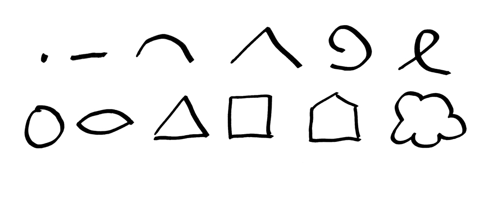
Aufgabe 1: Buchstabieren
Jede Sprache muss geübt werden. Und das machen wir jetzt. Bitte zeichnen Sie auf Ihr Blatt jede Glyphe 20 mal. Achten Sie auf ein sauberes Raster und eine gleichbleibende Qualität und Größe der Glyphen.
Zeit: 30 Minuten
Worte zeichnen
Aus der Kombination der Glyphen lassen sich Worte oder Dinge zusammensetzen. Diese sollten:
Was sollte beachtet werden?
Falls ein Grund- oder Horizontlinie nötig ist, beginnen Sie mit dieser.
Starten Sie dann mit den Zentren der Schwerkraft, also den großen Teilen eines Dings.
Bei einer Tasse beginnen Sie also mit dem zylindrischen Körper und nicht mit dem Henkel.
Verbinden Sie dann die großen Teile über Verknüpfungen.
Bleiben Sie zweidimensional.
Eine dreidimensionale Darstellung erhöht die Komplexität zumeist unnötig.
Es ist kein Problem, wenn Sie Elemente übereinander zeichnen.
Sie dürfen Elemente beschriften!
Aufgabe 2: Worte bilden
Zeichnen Sie aus den Glyphen folgende Dinge, jeweils drei mal:
Zeit: 30 Minuten
Vokabular aufbauen und Sätze bilden
Wie bei jeder neuen Sprache müssen wir auch in diesem Fall einen gewissen Satz an Worten in unserem Vokabular haben. Da wir in einer bestimmte Domäne agieren, brauchen wir entsprechendes Fachvokabular.
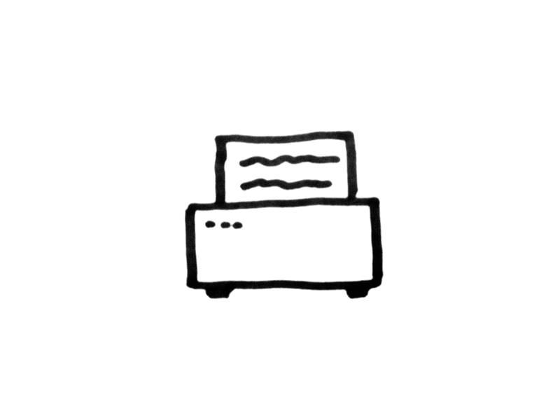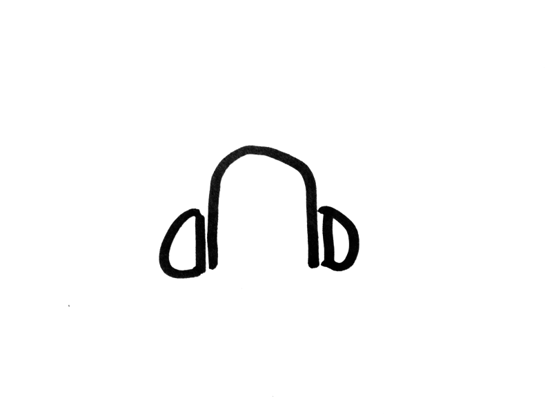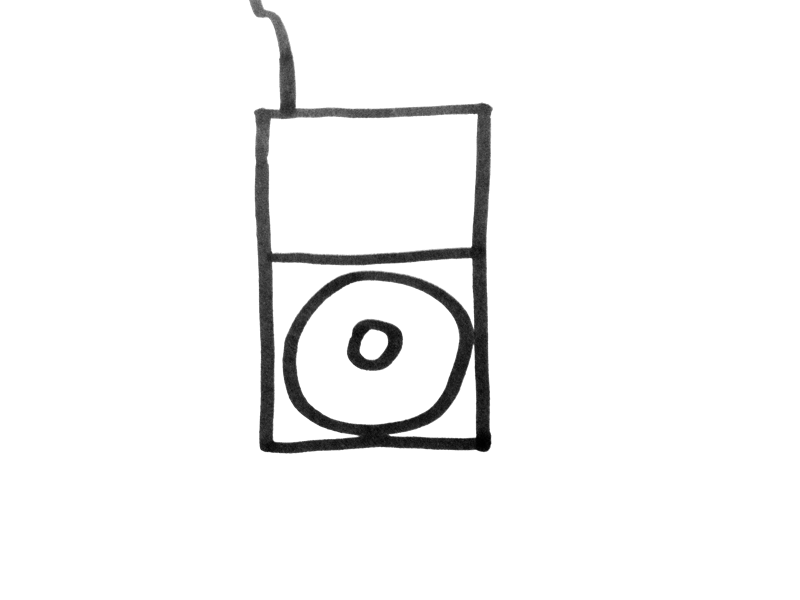
Forms & Flows
Geschlossene Glyphen stehen meist für Konzepte, Personen, Entitäten, Knoten oder Gegenstände, also Dinge mit einer Identität. Offene Glyphen stehen dagegen für Verknüpfungen, Zustände oder Bezüge.
Aufgabe 3a: Vokabeln suchen
Machen Sie in der 10er Gruppe eine möglichst vollständige Liste von Konzepten, Personen, Entitäten, Knoten und Gegenständen die in beim Apple AppStore Prozess eine Rollen spielen. Die Liste wird nachher zusammen getragen.
Zeit: 20 Minuten
Aufgabe 3b: Vokabeln visualisieren
Finden Sie zu den einzelnen Vokabeln entsprechende Visualisierungen.
Zeit: 30 Minuten
Aufgabe 3c: Vokabeln visualisieren
Finden und visualisieren Sie Bezüge zwischen zwei Konzepten, Personen, Entitäten, Knoten oder Gegenständen.
Zeit: 30 Minuten
| Zeit Ablauf oder Abfolge | Unterschied Vergleich oder Kontrast | Beziehung Struktur oder System | |
|---|---|---|---|
| Kopf schematisch, logisch und abstrakt | 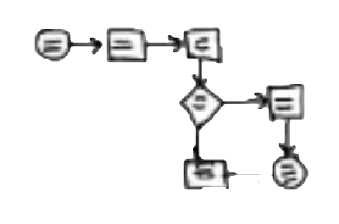 | 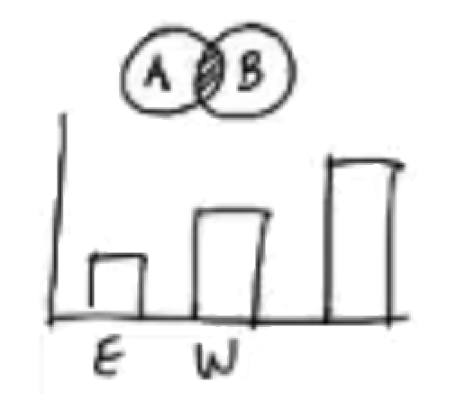 | 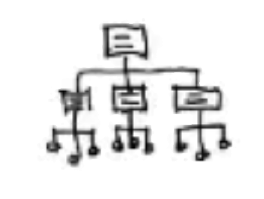 |
| Herz emotional, metaphorisch, sympathisch | 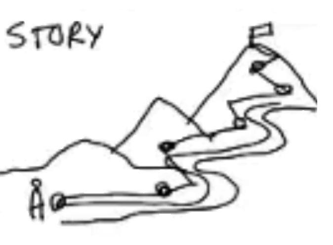 | 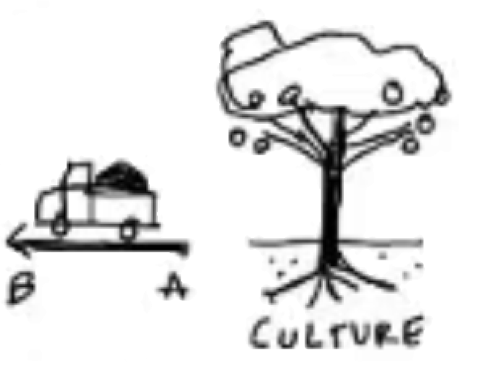 | 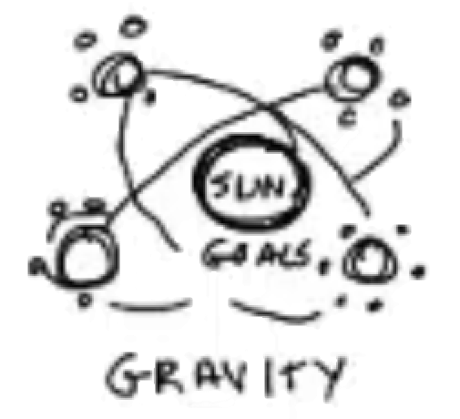 |
| Hand praktisch, verständlich, einfach | 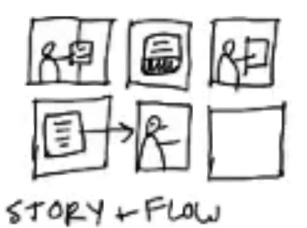 | 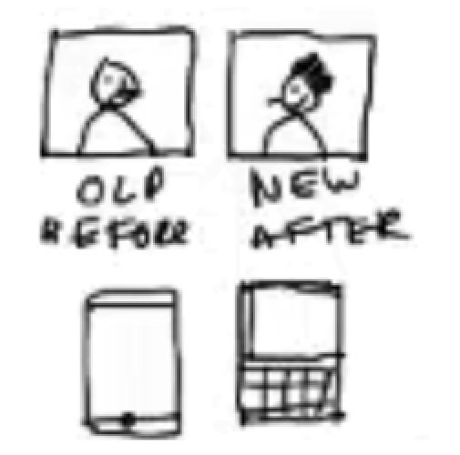 | 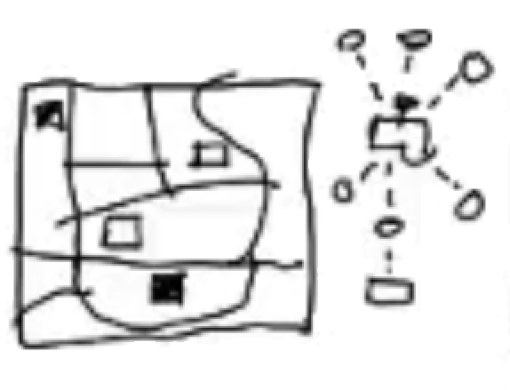 |
Aufgabe 4: AppStore Process
Entwickeln Sie alleine eine komplette Übersicht über die Abläufe im Apple AppStore.
Zeit: 60 Minuten
Thank you for listening
Slides: http://www.christiannoss.de
Use a spacebar or arrow keys to navigate